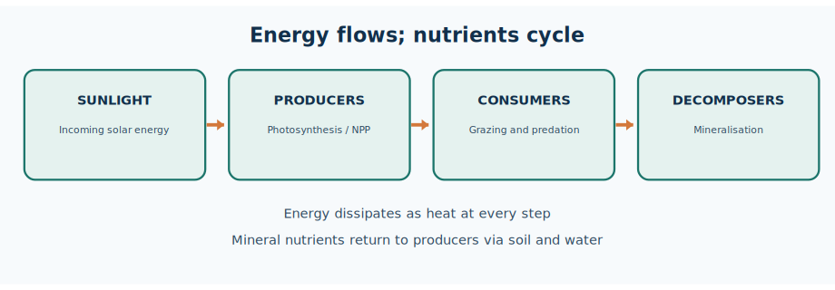
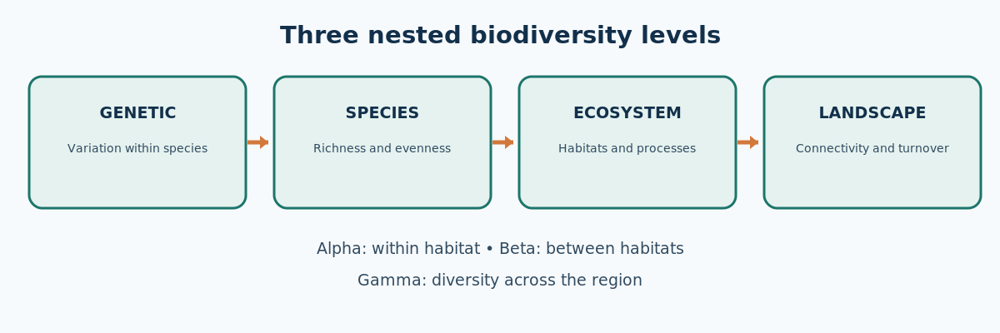
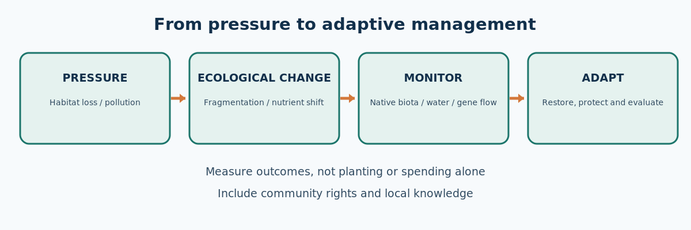

Cycle47 integrated PDF · Editable Markdown master · Preserved original PDF ·
TGPSC Group I · Paper IV · Unit III · Topic 3 · English · Published learning draft / not academically approved
Paper IV — Economy and Development · Unit III — Development and Environmental Problems · Topic 3
Exact commission-hosted Notification 02/2024 syllabus line: “3. Eco systems and Bio-diversity: Ecology and Eco-system; Food chains in Eco systems, Typology of eco system; Bio diversity and its conservation, Types of Bio diversity, threat to Bio diversity.”
| Official component | Detailed notes coverage | Exam outcome |
|---|---|---|
| Ecology and ecosystem | Sections 1–3, 6, 9 | Distinguish habitat, niche, system, productivity, cycling |
| Food chains in ecosystems | Sections 3–5 | Construct food webs, explain trophic efficiency and pyramids |
| Typology of ecosystem | Sections 7–8, 15 | Compare terrestrial, freshwater, wetland, agro and urban systems |
| Biodiversity and conservation | Sections 10–11, 13–14 | Explain three levels, indices, legal institutions, in/ex situ measures |
| Types of biodiversity | Section 10 | Genetic/species/ecosystem; alpha/beta/gamma distinction |
| Threats to biodiversity | Sections 12, 15–16 | Diagnose drivers and propose context-specific Telangana action |
What this chapter does not claim: No question is labelled an official previous-year question without an independently checked original paper and question number. International targets are not represented as achievements. Published draft is not academic approval.
Learning goals: Explain ecosystem functioning with causal diagrams; distinguish stocks from rates; apply biodiversity measures; evaluate conservation tools against rights and livelihoods; write evidence-based Telangana examples without inventing current statistics.
Ecology explains interactions among organisms and their physical environment; an ecosystem integrates those interactions with energy flow and nutrient cycling. Food chains are simplified pathways embedded in webs. The energy pyramid is always upright, but number and biomass pyramids may invert. Terrestrial, freshwater, wetland, agricultural and urban ecosystems differ in disturbance, hydrology and species composition.
Biodiversity includes genetic, species and ecosystem variation; alpha, beta and gamma describe spatial scales. Principal threats include habitat loss, overuse, invasive species, pollution and climate change. In situ conservation protects ecological processes in habitats; ex situ methods safeguard organisms or genetic material outside them. Effective policy must combine ecological evidence, legal institutions, local participation and long-term monitoring.
Telangana case studies include Kawal, Amrabad, village tanks, urban lakes and agroecosystems. The Telangana Biodiversity Board, National Biodiversity Authority and local committees have different responsibilities. The global Kunming–Montreal 2030 targets are commitments, not demonstrated achievements. This is a published learning draft pending independent academic review.
One-minute map: Ecology studies relationships; ecosystem combines biotic community and abiotic setting. Habitat is where; niche is functional role. Producer → consumer → decomposer links connect energy flow with nutrient cycling. Energy flows one way and dissipates; nutrients circulate. GPP − autotrophic respiration = NPP. Food chains simplify webs. Energy pyramid is always upright; number and biomass pyramids can invert. Forest, grassland, scrub, agroecosystem, river, tank, wetland and urban habitat have different ecological processes.
Definitions: Genetic diversity = variation within a species. Species diversity = richness plus relative abundance. Ecosystem diversity = different habitats and processes. Alpha = within site; beta = turnover between sites; gamma = regional diversity. Endemic ≠ necessarily threatened. In situ = protect functioning habitat; ex situ = seed bank, zoo or captive breeding. Bioaccumulation ≠ biomagnification. Resilience ≠ resistance.
Telangana anchors: Kawal and Amrabad tiger landscapes; Eturnagaram and Pakhal; tanks and Hyderabad urban lakes; Telangana Biodiversity Board, formed 2014; village biodiversity documentation. Forest Department identifies 2 tiger reserves, 3 national parks, 7 wildlife sanctuaries; counts are website-reported and subject to change.
Core ecological processes: Photosynthesis fixes energy; respiration dissipates it; decomposers mineralise organic matter. Nitrogen fixation, nitrification, denitrification and phosphorus cycling regulate nutrients. Eutrophication involves nutrient enrichment, algal production and possible oxygen depletion. Fragmentation damages movement and gene flow even when some tree cover remains.
Five major threats: habitat conversion/fragmentation; unsustainable exploitation; invasive alien species; pollution; climate change. They interact. IPBES's 2019 'up to one million species threatened' is an estimate of risk, not an extinction count.
Governance: Wildlife (Protection) Act 1972; Biological Diversity Act 2002 (as amended in 2023); Forest Rights Act 2006; NBA–State Biodiversity Boards–BMCs; CBD conservation, sustainable use and fair benefit sharing. Kunming–Montreal framework adopted December 2022: four 2050 goals, 23 targets for 2030; Target 2 restoration and Target 3 conservation are ambitions, not completed outcomes.
Mains structure: definition → mechanism → Telangana illustration → competing interests → practical recommendation. Use arrows correctly (food → eater); give units for biomass/productivity; never claim a plantation automatically equals biodiversity restoration.
Ecology examines how organisms interact with one another and with the physical conditions of their surroundings. Its unit of analysis can be an individual organism, a population of one species, a community of interacting populations, an ecosystem with living and non-living components, a landscape of connected ecosystems, or the biosphere. These levels answer different questions. An individual plant may tolerate a temperature range, a population may decline because recruitment is low, and an ecosystem may lose soil nutrients even while some species remain numerous. The examination distinction is important: ecology is the discipline, whereas an ecosystem is the functional system being studied.
Habitat means the physical place where an organism lives; ecological niche means its functional role, resource use, tolerances and interactions. Two birds may occupy the same forest habitat yet use different food resources and nesting layers. A niche is not merely an address. Competition becomes intense when niches overlap and limiting resources are scarce. Predation, parasitism, mutualism and commensalism also structure communities; their outcomes can vary with environmental conditions. A pollinator and flowering plant may benefit each other, but a change in flowering season can disrupt that relationship.
The environment comprises abiotic factors such as light, rainfall, soil texture, pH, dissolved oxygen and temperature, alongside biotic factors such as producers, consumers, decomposers and disease organisms. The same factor may be beneficial within a range and stressful outside it. Dissolved oxygen supports aquatic organisms; excessive nutrient loading can stimulate algal growth, followed by microbial oxygen consumption and fish mortality. Ecological explanation therefore follows causal sequences rather than memorised labels.
In Telangana, the dry deciduous forests of Kawal, the Nallamala landscape of Amrabad, Godavari-associated riparian habitats, village tanks, agricultural fields and Hyderabad's urban lakes provide contrasting ecological settings. They should not be treated as interchangeable green areas. A tank's ecological functioning depends on catchment runoff, sediments, macrophytes, fish, plankton and human withdrawals; a forest additionally depends on fire regimes, seed dispersal, herbivory and landscape connectivity. Comparing them reveals how local context changes conservation priorities.
Analytical distinction: A population census records abundance; a community survey records species composition; an ecosystem assessment measures processes such as productivity, decomposition, hydrology and nutrient cycling. A high count of one invasive plant can coexist with poor native biodiversity. Administrative decisions must select indicators matched to the question, rather than infer ecological health from a single attractive number.
An ecosystem is an open, dynamic system in which organisms and physical surroundings exchange energy and materials. Producers, primarily photosynthetic plants and algae, transform solar energy into chemical energy. Primary consumers eat producers; secondary and tertiary consumers feed at successive levels. Detritivores fragment dead organic matter, while bacteria and fungi chemically decompose it and mineralise nutrients. The distinction matters because shredding a leaf is not the same biochemical process as converting organic nitrogen into mineral forms usable by plants.
Abiotic components include water, air, soil minerals, temperature, sunlight and topography. They regulate what organisms can survive and how fast processes operate. For instance, a shallow tank may become warmer and more productive than a deep reservoir, but can also suffer faster oxygen depletion during heat and eutrophication. In a dry forest, seasonal moisture limits plant growth and alters herbivore movement. Thus biotic abundance cannot be understood independently of water and energy constraints.
Ecosystem boundaries are analytical choices, not sealed walls. A village tank receives silt, nutrients and pollutants from its catchment and sends water, fish, insects and sometimes floodwater outward. A forest patch exchanges seeds and animals with adjoining habitat. When a road fragments a corridor, it changes movement and mortality beyond the road's physical footprint. Policy based only on the legally notified boundary may therefore miss ecologically relevant connections.
Functional groups are more useful than simplistic species lists when studying processes. Nitrogen-fixing organisms add biologically available nitrogen, mycorrhizal fungi aid nutrient acquisition, pollinators support plant reproduction, and predators may regulate herbivores. Some species perform overlapping roles, providing functional redundancy. Yet redundancy is never unlimited: losing a specialist pollinator or a large seed disperser can impair functions that other organisms cannot readily replace.
A system may show apparent stability while approaching a threshold. Repeated nutrient additions can be absorbed temporarily by a wetland until a shift toward algal dominance occurs. Restoring the earlier state may require larger intervention than preventing the shift. This is hysteresis, relevant to urban lake restoration: removing one visible pollutant source may not immediately reverse sediment nutrient release or food-web changes.
Energy enters most ecosystems as sunlight, is captured by autotrophs, passes through feeding relationships and is dissipated as heat during respiration. Unlike nutrients, energy is not continuously recycled in a closed loop. The first law of thermodynamics requires energy conservation; the second explains why each transformation leaves less usable energy for the next trophic level. A diagram that depicts energy circulating endlessly from decomposers back to plants is conceptually wrong.
Gross primary productivity (GPP) is the total energy or carbon fixed by producers. Net primary productivity (NPP) equals GPP minus autotrophic respiration: NPP = GPP − Rₐ. NPP is the production available for plant growth, reproduction, herbivores and detrital pathways. Net ecosystem production additionally accounts for respiration by heterotrophs. Productivity varies with water, temperature, light, nutrients and vegetation type; standing biomass alone does not measure annual productivity.
The often-taught ten-percent transfer rule is a pedagogical approximation, not a universal physical constant. Actual trophic transfer efficiency varies with assimilation, metabolic costs, temperature, food quality and organism type. If producers contain 10,000 arbitrary energy units and transfer efficiency is assumed to be 10%, primary consumers might receive 1,000 and secondary consumers 100. The illustration explains why long food chains tend to support less biomass at their top, but an examiner should not infer that every real ecosystem obeys exactly 10%.
Decomposition creates an important detrital pathway alongside grazing. Leaf litter from Telangana's deciduous forests can be consumed by termites and other detritivores, then decomposed by microorganisms. Soil organisms influence infiltration and nutrient retention. Burning or removing all litter can affect nutrient cycling and microhabitat, even when the canopy remains. Likewise, wetland sediments may store organic carbon yet release methane under oxygen-poor conditions; ecological outcomes depend on biogeochemistry.
Management implications are practical. A reservoir stocked with fish cannot be evaluated only by fish numbers; primary production, dissolved oxygen, nutrient inputs and food-web balance determine carrying capacity. A restoration project that plants trees but ignores soil moisture, seedling survival and herbivory may record high planting effort without increased ecosystem productivity or resilience. Energy-flow analysis helps explain why ecosystem protection is more than visual greening.
A food chain is a simplified sequence of feeding and energy transfer: grass → grasshopper → frog → snake → raptor. A food web combines several such pathways and is closer to reality because consumers often eat multiple foods and organisms change diet across life stages. Producers form the basal trophic level; herbivores and predators occupy higher levels. Omnivores may operate at different trophic levels depending on what they eat. Decomposers act on organic matter originating from many levels rather than belonging to a single neat final step.
A grazing food chain begins with living producers. A detritus food chain begins with dead organic matter, such as fallen leaves, dung or dead plankton. In forest soils, detrital processes can dominate energy pathways. In a lake, phytoplankton supports zooplankton and fish, while sinking organic material supports microbes and benthic organisms. Both pathways are linked: dead algae feed detritivores, and mineralised nutrients support new algal growth.
Trophic cascades arise when changes at one feeding level indirectly affect another. A predator decline may increase herbivores, reduce vegetation and alter erosion. But the direction and magnitude depend on alternative prey, human activity, disease, rainfall and plant defences. The classic 'more predators always means more trees' formula is not a universal law. For Telangana's tiger landscapes, predator conservation must be assessed with prey availability, livestock interactions, corridors and habitat quality.
Biomagnification is distinct from bioaccumulation. Bioaccumulation means a substance builds up within an organism over time; biomagnification means concentrations increase across trophic levels when a persistent, bioavailable contaminant is poorly eliminated. Methylmercury is a familiar example. Not every pollutant biomagnifies; many are metabolised or diluted. Food-web knowledge is therefore necessary for environmental health decisions, fish-consumption advisories and pollutant monitoring.
Exam method: Draw a food web with arrows pointing from food to consumer, not the reverse. Include at least one detrital link. Then discuss a disturbance—pesticide application, invasive species, removal of a predator or eutrophication—and trace direct and indirect consequences. An answer earns analytical marks by showing pathways and uncertainty, not by merely naming trophic levels.
Ecological pyramids represent the number of organisms, biomass or energy at successive trophic levels. A pyramid of numbers can be inverted: one large tree may support many insects and parasites. A pyramid of biomass can be inverted in productive aquatic systems, where phytoplankton has low standing biomass but rapid turnover that supports greater consumer biomass at a given instant. A pyramid of energy is always upright when expressed as energy flow per unit area per unit time, because usable energy declines with transfers.
These pyramids are not interchangeable. Biomass is a stock, often measured as dry mass per unit area; productivity is a rate, often mass or energy per unit area per unit time. A grassland with modest standing biomass can have high seasonal productivity, whereas a mature forest can store large biomass but have different net annual production. Comparing them without units leads to false conclusions. An ecological pyramid should always state whether it measures numbers, mass or energy and the spatial and temporal units.
Pyramids also simplify complex webs into discrete levels. Parasites, omnivores, microbial loops and detritus-based feeding do not fit neatly. An aquatic food web may contain multiple size classes and overlapping trophic positions. Therefore a pyramid is a model for explaining transfer constraints, not a complete inventory of ecosystem relationships. This limitation should be noted in mains answers.
A Telangana example illustrates the difference: seasonal plankton blooms in a reservoir may create high turnover without a large standing algal biomass at the moment of sampling. A dry deciduous forest's mature trees represent substantial stored carbon but their annual carbon gain depends on rainfall and respiration. Policy makers must not equate a biomass map with a productivity map or a biodiversity map.
Quick diagnostic: If the question asks which ecological pyramid cannot be inverted, answer the energy pyramid. If it asks whether all aquatic biomass pyramids are inverted, answer no: inversion is possible, not inevitable. If it asks whether a pyramid includes decomposers completely, explain that conventional representations usually underrepresent the detrital network.
Nutrients circulate among atmosphere, water, organisms, soil and rock, but each element follows a different pathway. Carbon moves through photosynthesis, respiration, decomposition, combustion and ocean–atmosphere exchange. Plants temporarily store carbon in tissues; soils and sediments may store it longer. Clearing a forest can release carbon and reduce future uptake, yet the net effect depends on replacement land use, soil disturbance and time. Carbon storage and biodiversity conservation are related but not identical objectives.
The nitrogen cycle includes fixation of atmospheric N₂ by specialised microbes, ammonification of organic nitrogen, nitrification of ammonium to nitrate under suitable oxygen conditions, assimilation into biomass and denitrification returning nitrogen gases to the atmosphere. Fertiliser can increase crop yield but surplus nitrogen may leach to groundwater or enter tanks, producing eutrophication. Nitrate pollution and algal blooms arise from different pathways; sound interventions target source loads, transport and retention.
Phosphorus is commonly limiting in freshwater ecosystems and lacks a large biologically available atmospheric gaseous reservoir comparable to nitrogen. Weathering, fertiliser, erosion and sediment release supply phosphorus. A lake may remain eutrophic after sewage diversion because phosphorus stored in sediments continues to recycle internally. Restoration thus may require catchment controls, sediment management and ecological recovery, not only a one-time cleanup event.
Water moves by evaporation, transpiration, condensation, precipitation, infiltration, groundwater recharge and runoff. Vegetation influences interception, infiltration and soil structure; it does not 'create' rainfall by itself. Urban paving and encroachment alter recharge and peak runoff, while intensive groundwater pumping changes base flows and wetland persistence. Telangana's tanks are hydrologically connected to their catchments; conservation requires protecting feeder channels and drainage, not only desilting the water body.
Cycles connect ecological science to administration. Nutrient budgets can identify agricultural and sewage sources; carbon accounts can guide restoration; groundwater monitoring can detect pressure on dependent wetlands. A useful answer traces the process, the human disturbance, the resulting ecosystem response and a realistic management lever. Treating all cycles as the same recycling diagram hides the mechanisms needed for policy.
Terrestrial ecosystems differ in climate, soil, vegetation structure, disturbance and biodiversity. Tropical evergreen forests typically experience relatively high moisture and layered vegetation; tropical deciduous forests show seasonal leaf shedding; thorn and scrub ecosystems tolerate water scarcity; grasslands are maintained by interacting fire, grazing, rainfall and soils. Mountains contain elevation-related gradients. A grassland is not automatically a degraded forest, and afforesting natural grassland can harm its specialised species.
Telangana's forests are predominantly seasonal dry-deciduous and associated vegetation, not tropical rainforests. Kawal's teak–bamboo mosaic supports prey, predators, birds and soil organisms. Amrabad in the Nallamala hills combines forest, rocky terrain, streams and human-use landscapes. Eturnagaram and Pakhal offer additional habitat variation. Ecological classification must attend to local moisture, disturbance history and species composition rather than simply applying national forest-type labels.
Agroecosystems are deliberately managed ecosystems: crops, livestock, soil organisms, irrigation infrastructure and pests interact under human inputs. Their productivity may be high for selected crops but can depend on water, fertiliser and pesticides. Diversified farming, field margins and soil biota can support beneficial insects, whereas simplified monocultures may be vulnerable to pest outbreaks. Yet diversity alone does not guarantee yield or food security; trade-offs require context-specific evaluation.
Urban ecosystems include parks, street trees, vacant plots, lakes, stormwater channels and built surfaces. Urban biodiversity can reduce heat, provide recreation and support pollinators, but small isolated parks may not substitute for connected habitat. A green roof, restored tank and peri-urban scrub serve different functions. In Hyderabad, lake-catchment protection, native vegetation and reduced fragmentation are often more ecologically meaningful than counting planted ornamental trees.
Policy test: Before prescribing afforestation, determine the natural ecosystem type and whether the land is degraded forest, native grassland, scrub, wetland or farmland. Select native species and measure survival, regeneration, water use and habitat function. Planting density is an activity indicator; ecological recovery is an outcome indicator.
Freshwater ecosystems include rivers, streams, lakes, reservoirs, ponds, marshes and groundwater-dependent habitats. Rivers are flowing-water systems with longitudinal connectivity and seasonal discharge; lakes and tanks are comparatively standing-water systems with littoral, open-water and bottom zones. Wetlands are characterised by periodic or persistent water saturation and specialised soils or vegetation. Some wetlands dry seasonally and remain ecologically important even when they appear empty in summer.
Aquatic food webs begin with phytoplankton, macrophytes, attached algae and external detritus. Dissolved oxygen, temperature, turbidity and nutrient concentrations determine biological responses. Excess phosphorus and nitrogen may stimulate blooms, then oxygen depletion. A fish kill can result from oxygen collapse, toxins, sudden temperature change or other stressors; investigators should not assume one cause without measurements.
Telangana's traditional tank systems combine water storage, irrigation, fishery and ecological functions. Feeder channels, catchment land use and downstream connectivity influence tank health. Desilting may increase capacity but indiscriminate excavation can destroy littoral habitat and nesting sites. Lake beautification through concrete embankments can reduce wetland vegetation even when the site looks cleaner. Management must weigh flood control, water supply, biodiversity and public access.
Riparian vegetation stabilises banks, shades streams, filters some runoff and provides corridors. Removing it can increase erosion and thermal stress. Invasive aquatic plants can obstruct water, change oxygen dynamics and suppress native vegetation; mechanical removal without nutrient control may lead to rapid regrowth. Groundwater extraction may reduce wetland water levels indirectly, so a wetland's ecological boundary extends beyond its visible shoreline.
Wetland monitoring should use a basket of indicators: water quality, seasonal hydroperiod, native species, fish community, bird use, sediment, inflows and human pressures. Bird counts alone may fluctuate with migration and weather. A strong mains answer explains ecological processes, identifies competing uses and proposes catchment-scale governance rather than a single engineering fix.
Worked wetland laboratory — separate nutrient concentration from pollutant mass. Consider an explicitly hypothetical feeder stream entering a village tank at 5 million litres per day (MLD), with total phosphorus concentration of 4 mg/L. The incoming phosphorus load is 5,000,000 L/day × 4 mg/L ÷ 1,000,000 mg/kg = 20 kg/day. If an upstream treatment and runoff-control programme lowers concentration to 1 mg/L while flow remains 5 MLD, the incoming load becomes 5 kg/day, a reduction of 15 kg/day (75%). The calculation does not claim that a Telangana tank actually has these measurements, nor that a 75% load reduction guarantees immediate ecological recovery. Sediment can release previously stored phosphorus, and oxygen dynamics depend on temperature, algal biomass, mixing and biological oxygen demand.
A scientifically defensible monitoring design therefore samples inflows at multiple seasons, estimates loads rather than only grab-sample concentrations, and records dissolved oxygen at different times of day. It pairs chemistry with biological evidence: submerged vegetation, native fish recruitment, macroinvertebrates and wetland-bird habitat. A single clear-water photograph is not a restoration indicator. If a new embankment eliminates shallow vegetated margins, improved public access may coexist with biodiversity loss. For a mains answer, present the sequence catchment pressures → nutrient and sediment loads → ecosystem response → management intervention → repeated outcome monitoring, and identify who maintains drains, regulates discharges and publishes results. The method is transferable to Telangana tanks without inventing district-level field observations.
Population size changes through births, deaths, immigration and emigration. Exponential growth assumes unconstrained proportional increase; logistic growth introduces resource limitation and an idealised carrying capacity K. Real populations rarely follow smooth curves because rainfall, disease, predation, migration and human disturbance vary. Carrying capacity is not a permanent numerical property of a forest; it changes with habitat quality, seasons and management.
Age structure, sex ratio, reproductive success and spatial distribution matter as much as headcount. A tiger reserve can record occasional visiting tigers without maintaining a self-sustaining breeding population. Small isolated populations may face inbreeding, demographic stochasticity and loss of genetic diversity. Corridors facilitate dispersal and gene flow, though their effectiveness depends on road mortality, human settlement and prey habitat.
Ecological succession is directional change in community composition after disturbance or on newly available substrate. Primary succession begins where soil is absent or extremely undeveloped; secondary succession follows disturbance where soil or propagules remain. Succession is not a rigid ladder ending in one universal climax. Fire, grazing, drought, invasive species and human management can maintain different stable or shifting states.
Interactions such as competition, predation, mutualism and facilitation influence succession. Nurse plants can protect seedlings from heat; herbivores may suppress some species and benefit others. A wetland recovering after pollution may pass through phases of algal dominance, submerged plants and changing fish assemblages. Managers should establish reference conditions and realistic recovery timelines rather than declare success after one season.
Conservation consequence: Protecting habitat area without connectivity can leave populations genetically isolated. Conversely, corridors without core habitat protection may facilitate movement but not reproduction. A credible landscape plan considers habitat quality, dispersal routes, human livelihoods and long-term monitoring together.
Worked population-accounting laboratory — abundance is not carrying capacity. Suppose a hypothetical wetland bird population has 120 individuals at the beginning of a year, with 18 births, 12 deaths, 5 immigrants and 7 emigrants. The demographic identity is N(next) = N(now) + births − deaths + immigration − emigration. It gives 120 + 18 − 12 + 5 − 7 = 124, a net increase of four individuals, or 3.33% of the starting population. This accounting is not evidence that breeding conditions improved: immigration could conceal poor local recruitment, and imperfect detection could bias counts. A field team should distinguish marked individuals, nesting success, juvenile survival and temporary visitors.
Contrast that observed accounting identity with a theoretical logistic model. If an analyst assumes intrinsic growth rate r = 0.20 per year, carrying capacity K = 200 and N = 120, the model's instantaneous growth term is rN(1 − N/K) = 0.20 × 120 × 0.40 = 9.6 individuals per year. It is a model output, not the observed four-individual increase. One cannot infer that the habitat's true K equals 200 from a single count. K may change when a tank dries, invasive plants expand, food availability shifts or disturbance intensifies. Monitoring should use repeated surveys and, where feasible, detection-adjusted estimates.
The conservation lesson is that a stable headcount can conceal genetic isolation, an ageing population or declining breeding success. Corridors should be evaluated by actual movement and successful reproduction, not only mapped width. A Telangana district answer can specify baseline counts, age structure, breeding indicators, habitat quality, connectivity and a multi-year evaluation window, while clearly labelling any numerical example as hypothetical.
Biodiversity is variability among living organisms at genetic, species and ecosystem levels. Genetic diversity is variation within and among populations of a species, important for disease resistance and adaptation. Species diversity includes richness and relative abundance: two habitats with equal species counts can differ greatly if one is dominated by a single species. Ecosystem diversity refers to different habitats, communities and ecological processes across a landscape.
Alpha diversity is diversity within a local habitat, beta diversity describes turnover in composition between habitats, and gamma diversity covers a broader region. These are analytical scales, not three legal categories of protection. A landscape containing a tank, scrubland and deciduous forest may have higher regional diversity than any one component. Replacing all with uniform plantations can reduce beta and gamma diversity even if tree cover increases.
Biodiversity has provisioning value (food, fibres, medicines), regulating value (pollination, water purification, climate regulation), cultural value (identity, recreation, sacred groves) and supporting ecological functions. These classifications overlap and should not be double-counted in economic valuation. Intrinsic value argues that organisms merit protection beyond immediate human use; instrumental value emphasises benefits to people. Public policy can recognise both without pretending they are identical ethical claims.
Agrobiodiversity includes traditional crop varieties, livestock breeds, pollinators and soil organisms. Uniform high-yield varieties may simplify supply chains but reduce genetic options under emerging pests or climate extremes. Conserving seed diversity can complement, rather than automatically replace, modern breeding. The policy question is how to maintain adaptation capacity and farmer choice while meeting food-security goals.
Examination warning: Endemism means natural restriction to a geographical area; rarity means low abundance or restricted occurrence; threatened status is a risk category. An endemic species is not necessarily threatened, and a widespread species can become threatened. Hotspots combine high endemism and high habitat loss; they are not merely places with many trees or charismatic animals.
Species richness is the number of species recorded; evenness measures how individuals are distributed among them. Shannon and Simpson indices combine richness and relative abundance in different ways. A higher numerical index is not automatically evidence of improved conservation if sampling effort, season, taxonomic coverage or habitat type differs. Standardised transects, camera traps, point counts and environmental DNA have different strengths and detection biases.
Occupancy means the proportion of surveyed sites where a species is detected or inferred present; abundance means numbers of individuals. Detectability is imperfect: a shy mammal may be present but unseen. Camera-trap detections require effort correction and, for individual identification, suitable markings or methods. eDNA detects traces of genetic material but does not by itself establish a viable breeding population or precise population size.
Threat assessment uses population trends, geographic range, fragmentation and other evidence. The IUCN Red List categories include Vulnerable, Endangered and Critically Endangered, among others; a legal schedule under India's wildlife law serves a different regulatory function. Protected-area notification does not guarantee that every species within it is secure, and an unprotected community forest may still have high conservation value.
Baseline selection matters. A lake surveyed during the monsoon cannot be fairly compared with a dry-season survey without accounting for seasonal water and migration. A forest survey that records tree cover does not necessarily measure understorey diversity, native composition or habitat connectivity. Monitoring must match the causal question: for restoration, track native recruitment, invasives, water quality and species turnover, not merely annual planting counts.
Administrative application involves transparency. Citizen-science records can reveal distributions but need validation and safeguards for sensitive species locations. Public biodiversity registers can document local knowledge with appropriate consent and benefit-sharing safeguards. Data should support adaptive management—revising interventions when evidence contradicts assumptions—rather than serve only as a reporting target.
Habitat conversion and fragmentation are major threats because they reduce area, divide populations and alter edge conditions. Roads, mines, settlements, agricultural expansion and unplanned urbanisation can affect movement, water flow and fire. A fragmented landscape may retain similar total green area yet lose interior habitat and viable corridors. Edge effects include light, wind, invasive plants and human disturbance; their severity depends on species and landscape geometry.
Overexploitation occurs when harvesting exceeds replenishment: timber, fuelwood, fish, medicinal plants or wildlife can decline under unsustainable extraction. Sustainable use requires harvest data, tenure clarity, enforcement and alternatives for livelihoods. Blanket exclusion without recognising forest-dependent communities can create injustice and undermine cooperation. Community rights and ecological limits must be assessed together, not treated as opposing slogans.
Invasive alien species can outcompete native organisms, alter fire regimes, spread disease or transform habitats. Not every non-native species is invasive; invasiveness depends on establishment, spread and ecological harm. Removing an invasive species without restoring native vegetation or addressing the original disturbance can fail. Climate change shifts temperature and rainfall regimes, intensifies heat and changes phenology, interacting with fragmentation and disease.
Pollution includes nutrient loading, pesticides, heavy metals, plastics, light and noise. Its effects may be sublethal: reduced reproduction, altered behaviour or disrupted food webs. A tank can appear visually clean while suffering nutrient enrichment; a forest can appear green while losing sensitive amphibians. Conservation assessment therefore needs multiple indicators and causal investigation.
The 2019 IPBES Global Assessment estimated that up to one million animal and plant species face extinction risk, an estimate with modelling uncertainty rather than a count of already extinct species. Its major direct drivers include land- and sea-use change, exploitation, climate change, pollution and invasive alien species. Local management should prioritise pressures supported by evidence instead of importing global rankings mechanically into every Telangana habitat.
In situ conservation protects species and ecological processes in natural habitats through national parks, wildlife sanctuaries, conservation and community reserves, biodiversity heritage sites, habitat restoration and sustainable community management. Ex situ conservation maintains organisms or genetic material outside natural habitats through seed banks, botanical gardens, zoological collections, tissue culture and captive breeding. These are complementary, not substitutes: a seed bank cannot conserve pollinator interactions, fire regimes or a functioning watershed.
Protected areas require effective management, not only legal notification. Core habitat, buffer land use, corridors, fire control, invasive management, prey availability and community relations determine outcomes. India's Wildlife (Protection) Act, 1972 provides a major legal framework, with subsequent amendments. The Biological Diversity Act, 2002, as amended, establishes institutions for conservation, sustainable use and access-and-benefit sharing. The Forest Rights Act, 2006 addresses specified rights of forest-dwelling communities and must be considered in forest governance.
Telangana's forest department identifies two tiger reserves, three national parks and seven wildlife sanctuaries. Kawal and Amrabad are useful landscape examples, but their ecology and surrounding settlement patterns differ. A tiger reserve can protect large habitat while also needing corridor management beyond its core. Urban protected spaces can support native biodiversity but cannot replace intact large forest ecosystems.
Restoration should start with diagnosis: was the system damaged by invasive species, altered hydrology, grazing pressure, pollution or fragmentation? Actions may include removing stressors, re-establishing natural water flow, assisted native regeneration and monitoring. Mass planting is inappropriate for some natural grasslands or wetlands. Ecological restoration aims to recover processes and resilience, not to maximise a single vegetation metric.
Conservation has distributive effects. Restrictions may protect species while imposing costs on local users; poorly designed compensation may miss those costs. Participatory governance, recognised rights, benefit sharing and credible grievance mechanisms can improve both equity and compliance. The difficult policy task is to establish ecological limits while making responsibilities and benefits legitimate to affected communities.
The Convention on Biological Diversity has three broad objectives: conservation of biodiversity, sustainable use of its components, and fair and equitable sharing of benefits from genetic resources. India's Biological Diversity Act created the National Biodiversity Authority, State Biodiversity Boards and local Biodiversity Management Committees. The Telangana Biodiversity Board reports constitution in 2014 and state rules in 2015. Its institutional role differs from that of the Forest Department: biodiversity governance extends beyond reserved forests to farms, lakes, settlements and associated knowledge.
Biodiversity Management Committees can facilitate local documentation and People's Biodiversity Registers. A register is not automatically a verified scientific census or a licence to disclose sensitive traditional knowledge. Data quality, informed participation and protection against misappropriation matter. Access-and-benefit sharing concerns how benefits from utilisation of biological resources and associated knowledge are shared under the applicable law and rules; the precise obligations depend on user category and legal provisions.
The Kunming–Montreal Global Biodiversity Framework was adopted in December 2022 and sets four goals for 2050 and 23 targets for 2030. Target 3 seeks effective conservation and management of at least 30% of terrestrial, inland-water, coastal and marine areas by 2030; Target 2 concerns restoration of at least 30% of degraded ecosystems. These are international targets, not proof that Telangana or India has already achieved them. Quality, representation, connectivity and equitable governance are integral to the target.
National parks, wildlife sanctuaries and tiger reserves are important, but biodiversity planning must also consider ecological corridors, community-managed landscapes, tanks, native grasslands and agricultural diversity. Telangana's urbanisation creates particular pressures on lake catchments and peri-urban habitats. District planning can integrate biodiversity into land-use maps, environmental appraisal and watershed management, provided agencies share information and communities can scrutinise trade-offs.
The legal and administrative picture changes over time. The Biological Diversity (Amendment) Act, 2023 modified the original framework; students should distinguish enactment, commencement, rules and operational implementation rather than assume every announced proposal is immediately effective. For examination answers, state the institution and objective clearly and avoid unsupported claims about the latest counts of committees or protected species.
Kawal dry-deciduous landscape: Teak and bamboo forests, grassland patches and riparian zones form a mosaic. Tiger and prey conservation depends on vegetation structure, disturbance, connectivity and surrounding land use. The official reserve site reports notification as a tiger reserve in 2012; its website's species counts describe reported inventories, not necessarily current complete census totals. An ecological answer should trace how prey habitat, corridors, fire and livestock interactions affect viability rather than assume a reserve boundary alone guarantees recovery.
Amrabad and the Nallamala landscape: Forested hills and streams support large-mammal habitat and ecological connectivity. Conservation discussions must consider forest-dependent communities, water sources, tourism and potential infrastructure disturbance. Tourism may fund local livelihoods, but uncontrolled vehicles, noise and waste can degrade habitat. Carrying-capacity decisions should be based on ecological sensitivity and monitoring, not only ticket demand.
Village tanks and urban lakes: A tank is a catchment-linked ecosystem. Sewage and fertiliser nutrients can drive eutrophication, while feeder-channel obstruction changes hydrology. Restoration requires upstream source control, littoral habitat, seasonal water levels and community governance. Concrete shorelines may improve some access functions while harming emergent vegetation and breeding sites. Compare ecological indicators before and after intervention rather than relying on appearance.
Agricultural landscapes: Pollinators, pest predators, soil microbes and crop varieties create ecosystem services within working landscapes. Pesticide misuse can remove beneficial insects, while excessive fertiliser affects downstream water bodies. Diversification and habitat strips may improve resilience but require local trials and farmer participation. Conserving agrobiodiversity must be compatible with food security and household incomes.
Urban Hyderabad: Road construction, heat islands, building expansion and wetland encroachment alter habitat patches. Native urban trees, connected green spaces and protected lake buffers can improve ecological function. However, plantation numbers are weak proxies for native biodiversity. Municipal assessment should measure canopy survival, habitat connectivity, species composition, water quality and access equity. This provides a realistic district-administration case study for a mains answer.
Ecosystem resilience is the capacity to absorb disturbance and reorganise while retaining core functions; resistance is the capacity to withstand change with little alteration. A drought-resistant scrub system may appear less lush than a plantation but be better adapted to local water constraints. Functional diversity, habitat connectivity, soil condition and management institutions influence resilience. No single diversity index predicts every form of resilience; outcomes depend on disturbance type and functional traits.
Conservation policy faces genuine trade-offs. Strict protection may be essential for sensitive breeding habitat, while sustainable-use zones can support livelihoods and stewardship. Captive breeding may prevent extinction of a species but does not replace restoring its habitat. A large plantation can sequester some carbon yet reduce native grassland biodiversity. A hydrological intervention can increase water storage while disrupting seasonal wetland ecology. These examples show why ecological assessment must specify objectives and distributional consequences.
A defensible public-policy framework has five steps: define the ecological problem and baseline; identify causal drivers; compare options including no-action; consult affected rights-holders and technical experts; monitor outcomes and adapt. Use separate indicators for ecological integrity, social equity and economic cost. For example, a lake-restoration scorecard might track nutrient loads, native macrophytes, dissolved oxygen, flood performance and local access. Success cannot be inferred from one indicator alone.
For a 200–250-word mains response, begin with a precise definition, organise the body under two or three causal headings, insert a Telangana example and end with an actionable conclusion. For a question on biodiversity threats, distinguish habitat loss, overuse, invasives, pollution and climate change. For ecosystem functioning, use energy flow and nutrient cycling. For conservation, distinguish in situ and ex situ measures and address local governance. These distinctions prevent generic environmental essays that miss the syllabus demand.
Final conceptual chain: Abiotic conditions and biotic interactions shape ecosystem structure; energy flow and nutrient cycling sustain functioning; biodiversity exists at genetic, species and ecosystem levels; human pressures alter populations and processes; conservation must protect habitats, functions, connectivity and equitable institutions. This chain connects the whole topic without reducing it to disconnected definitions.



Each is an original schematic. Arrows are explanatory, not quantitative measured flows.
Each question is newly authored for practice. The correct option and causal explanation follow the alternatives.
A. Ecology is a discipline; ecosystem is a functional biotic–abiotic system
B. Both are synonyms for a forest
C. Ecology is abiotic and ecosystem only biotic
D. Ecosystem refers only to animals
Answer: A. Ecology studies interactions; an ecosystem is a unit containing living organisms, physical environment and exchanges.
A. The place occupied
B. Functional role and resource use
C. Only altitude
D. Only rainfall
Answer: B. Habitat is location; niche includes feeding, interactions, tolerances and resource utilisation.
A. GPP + respiration
B. GPP − autotrophic respiration
C. Consumer biomass − producer biomass
D. Total carbon in soil
Answer: B. NPP subtracts producers’ own respiratory losses from gross fixation.
A. Producers always outnumber consumers
B. Useful energy is lost at each transfer
C. All biomass pyramids are upright
D. Detritivores do not respire
Answer: B. Thermodynamic losses reduce energy available at successively higher trophic levels.
A. Inverted pyramid of numbers
B. Inverted energy pyramid
C. No food chain
D. No primary producer
Answer: A. One large producer can support many smaller consumers, so numbers need not form an upright pyramid.
A. Never photosynthesise
B. Turn over rapidly despite low standing biomass
C. Have zero respiration
D. Are always larger than fish
Answer: B. A low producer stock with high turnover can sustain larger consumer standing biomass.
A. Dead litter
B. Living primary producers
C. Top carnivores
D. Mineral nutrients alone
Answer: B. Grazing pathways start with living autotrophic biomass; detrital chains start with dead organic material.
A. From predator to prey
B. From food to consumer
C. From decomposer to sunlight
D. From higher to lower biomass
Answer: B. Arrows show direction of energy transfer, from the organism eaten to the eater.
A. Growth of body size
B. Rising concentration of certain contaminants across trophic levels
C. Plant photosynthesis
D. Increase in water salinity alone
Answer: B. Persistent poorly eliminated contaminants may become more concentrated in higher-level consumers.
A. Only herbivores
B. Bacteria and fungi
C. Only top predators
D. Only birds
Answer: B. Microbial decomposers release inorganic nutrients; detritivores mainly fragment material.
A. Photosynthesis
B. Denitrification
C. Transpiration
D. Nitrification
Answer: B. Denitrifying microbes reduce nitrogen oxides to gaseous forms, closing part of the nitrogen cycle.
A. Phosphorus
B. Oxygen
C. Hydrogen
D. Helium
Answer: A. Phosphorus enters via runoff, fertiliser and sediments; it often limits freshwater primary production.
A. K never changes
B. K varies with resources, season and habitat
C. K is the number of species
D. K equals rainfall in millimetres
Answer: B. Carrying capacity is an ecological approximation dependent on habitat quality and environmental conditions.
A. On developed soil after a harvest
B. Where soil is absent or poorly formed
C. Only in reservoirs
D. Only after pesticide application
Answer: B. Primary succession starts on newly exposed substrate, whereas secondary succession follows disturbance with soil retained.
A. Multiple crop varieties of one species
B. A river and a forest
C. Number of bird species in a district
D. Different habitats in one landscape
Answer: A. Varieties within a crop species represent genetic variation, not ecosystem or species diversity.
A. Turnover between habitats
B. Diversity within a local habitat
C. Global extinction rate
D. Total regional GDP
Answer: B. Alpha refers to local diversity; beta measures compositional change; gamma describes regional diversity.
A. They must have equal evenness
B. Their evenness and diversity indices may differ
C. They must be the same ecosystem
D. Richness counts biomass
Answer: B. Richness counts species but not the distribution of individuals across them.
A. Must be critically endangered
B. Naturally occurs only in a particular geographic region
C. Is always invasive
D. Lives only in zoos
Answer: B. Endemism describes geographic restriction; it does not by itself establish threat status.
A. Seed bank
B. Wildlife sanctuary protecting natural habitat
C. Cryopreservation only
D. Captive breeding enclosure
Answer: B. In situ measures conserve species in functioning habitats; ex situ maintains them outside natural settings.
A. All grasslands are degraded forests
B. Planting trees can harm native grassland biodiversity
C. More trees always means more biodiversity
D. Grasslands lack ecosystem services
Answer: B. Natural grasslands support specialist biota; unsuitable tree planting can change hydrology and displace species.
A. Only atmospheric oxygen
B. Connectivity and population gene flow
C. Only the colour of leaves
D. Only nitrogen fixation
Answer: B. Fragmentation isolates populations and changes edges and movement, even if total vegetation area remains substantial.
A. Freshly painted promenade
B. Improved water quality, native biota and hydrology over time
C. Number of decorative lights
D. One-day fish stocking
Answer: B. Ecological recovery requires functional, sustained indicators rather than cosmetic works.
A. 1992
B. 2002
C. 2014
D. 2025
Answer: C. The board states it was constituted in 2014 under section 22(1) of the Biological Diversity Act.
A. Conservation
B. Sustainable use
C. Fair benefit sharing
D. Maximising fossil-fuel production
Answer: D. CBD objectives concern conservation, sustainable use and equitable benefit sharing.
A. 30% effective area conservation by 2030
B. 30% GDP growth
C. 30% reduction in all taxes
D. 30% increase in pesticide use
Answer: A. The target concerns effective, representative, connected and equitably governed conservation of areas.
A. Species already extinct
B. An estimate of species threatened with extinction
C. Count of protected areas
D. India’s endemic species total
Answer: B. It estimates extinction risk, with uncertainty; it is not a census of species already extinct.
A. Resistance limits change; resilience enables recovery/reorganisation
B. They are identical
C. Resistance concerns only insects
D. Resilience means no disturbance occurs
Answer: A. Resistance describes withstanding change; resilience describes capacity to absorb and recover while retaining functions.
A. A confirmed breeding population
B. Evidence of genetic traces, requiring additional interpretation
C. An invasive species
D. A top predator
Answer: B. eDNA supports presence inference but not exact abundance or reproduction without corroboration.
A. Only paint the embankment
B. Control catchment nutrients and consider sediment/food-web dynamics
C. Introduce random exotic fish
D. Drain once and declare permanent success
Answer: B. External nutrient inputs and internal sediment recycling both may sustain eutrophic conditions.
A. Number of saplings distributed
B. Native regeneration, hydrology, habitat functions and social impacts
C. Amount spent on publicity
D. Number of concrete paths
Answer: B. Outcome-based monitoring covers ecological processes and affected communities, not activity totals alone.
Use these blueprints to plan independent answers; full model answers are provided in the companion file.
Opening: Define the key term and scope in two sentences. Body: Explain the mechanism, distinguish common misconceptions, and provide a Telangana application. Evaluation: State at least one limitation, trade-off or rights concern. Conclusion: Recommend measurable, practical institutional action.
Opening: Define the key term and scope in two sentences. Body: Explain the mechanism, distinguish common misconceptions, and provide a Telangana application. Evaluation: State at least one limitation, trade-off or rights concern. Conclusion: Recommend measurable, practical institutional action.
Opening: Define the key term and scope in two sentences. Body: Explain the mechanism, distinguish common misconceptions, and provide a Telangana application. Evaluation: State at least one limitation, trade-off or rights concern. Conclusion: Recommend measurable, practical institutional action.
Opening: Define the key term and scope in two sentences. Body: Explain the mechanism, distinguish common misconceptions, and provide a Telangana application. Evaluation: State at least one limitation, trade-off or rights concern. Conclusion: Recommend measurable, practical institutional action.
Opening: Define the key term and scope in two sentences. Body: Explain the mechanism, distinguish common misconceptions, and provide a Telangana application. Evaluation: State at least one limitation, trade-off or rights concern. Conclusion: Recommend measurable, practical institutional action.
Opening: Define the key term and scope in two sentences. Body: Explain the mechanism, distinguish common misconceptions, and provide a Telangana application. Evaluation: State at least one limitation, trade-off or rights concern. Conclusion: Recommend measurable, practical institutional action.
All questions are original practice prompts, not authenticated official PYQs.
Introduction. An ecosystem functions through two connected but fundamentally different processes: the one-way transfer of usable energy and the repeated movement of chemical nutrients between organisms and their physical surroundings. Confusing these processes obscures why ecological productivity depends on both sunlight and soil or water quality.
Energy pathway. Producers convert sunlight into chemical energy through photosynthesis. Gross primary productivity measures fixation, while net primary productivity subtracts producers’ respiration. Herbivores, predators and decomposers use part of the remaining energy, and every transfer dissipates usable energy as heat. Thus the energy pyramid remains upright; the ten-percent rule is only an illustrative approximation.
Nutrient pathway. Carbon, nitrogen and phosphorus move through plants, consumers, litter, decomposers, soils and water. Microbes mineralise organic matter, making nutrients available again. Nitrogen fixation and denitrification link biological processes to the atmosphere. Unlike energy, matter cycles, although human activities can displace nutrients and create imbalances.
Telangana illustration. In a village tank, sunlight supports algae and aquatic plants, which feed zooplankton and fish. Agricultural runoff can add nutrients, causing excessive algal growth and subsequent oxygen depletion. Desilting alone cannot solve the problem if external nutrient loading continues.
Conclusion. Ecosystem management must protect productivity, decomposition and nutrient balance together. Catchment-level monitoring of inflows, oxygen, sediments and native organisms offers a stronger strategy than treating the tank as a storage structure alone.
Background. Food relationships determine how energy and contaminants move through ecological communities. Three teaching tools—chains, webs and pyramids—highlight different aspects of the same system but should not be treated as complete replicas of nature.
Food chains and webs. A food chain follows one sequence, such as grass → grasshopper → frog → snake. A food web links multiple chains because consumers use several resources and diets change over time. Grazing chains begin with living producers, while detrital chains begin with dead organic material. Decomposers process material from many trophic levels.
Ecological pyramids. Pyramids of numbers count organisms, pyramids of biomass measure standing stock, and pyramids of energy measure transfer rates. Number pyramids may invert when one tree supports many insects. Biomass pyramids may invert in aquatic systems with fast-turnover phytoplankton. Energy pyramids cannot invert because transfers lose usable energy.
Applications. In Telangana's reservoirs, food-web analysis can identify how nutrient enrichment affects plankton, fish and oxygen. In forest habitats, it can illuminate links between herbivores, predators and vegetation. Biomagnification assessment uses trophic pathways to track persistent contaminants.
Limitations and conclusion. These models simplify omnivory, microbial loops, seasonality and changing trophic positions. A reliable assessment combines diagrams with field observations, productivity estimates and chemical monitoring. The value of the models lies in revealing causal pathways, not replacing ecological complexity with a rigid ladder.
Introduction. Biodiversity means variation in life at genetic, species and ecosystem levels. Its conservation requires attention to processes and working landscapes, not merely the legal boundaries of forests.
Three levels. Genetic diversity includes different alleles and varieties within a species; it supports adaptation to disease, drought and climatic change. Species diversity includes richness and relative abundance, so equal species counts need not imply equal ecological condition. Ecosystem diversity encompasses forests, wetlands, grasslands, scrub, farms and the ecological processes that distinguish them.
Beyond protected areas. Wildlife sanctuaries and tiger reserves are essential for sensitive habitats and large mammals, but pollinators, crop varieties, wetlands and ecological corridors frequently occur outside them. Isolated protected areas may lose genetic exchange. Uniform tree planting on natural grassland can reduce specialist biodiversity despite increasing tree cover.
Telangana applications. Kawal and Amrabad need landscape connectivity and habitat quality. Village tanks require catchment protection and native aquatic vegetation. Agricultural biodiversity depends on crop diversity, soil organisms and pollinator habitat. Hyderabad's urban lakes and green corridors contribute additional ecological functions.
Governance. Biodiversity Management Committees and local registers can support documentation and participation, while the Telangana Biodiversity Board provides a state institutional framework. Scientific validation and protection of local knowledge are necessary.
Conclusion. A conservation strategy should combine protected core habitats, corridors, community stewardship, wetland protection and genetic-resource safeguards. Measuring ecological outcomes rather than only notified area or planting totals is essential.
Introduction. Biodiversity decline rarely has one cause. Habitat change, unsustainable extraction, invasive species, pollution and climate change interact, producing cumulative effects on populations and ecological functions.
Drivers. Roads, mining and urban expansion fragment habitats and interrupt movement. Excessive harvesting can remove reproductive adults faster than replacement. Invasive alien species may alter competition and fire. Fertiliser runoff and sewage can transform tanks through eutrophication. Climate shifts intensify drought, heat and phenological mismatches, magnifying other stresses.
District diagnosis. A district administration should map forests, tanks, drainage, grasslands, corridors and land-use change. Baselines must record native species, habitat quality, seasonal water levels and community dependence. Threats should be prioritised by evidence rather than by visibility or publicity value. Protected species records may require confidentiality.
Action package. Prevent avoidable habitat conversion, restore feeder channels, control sewage and nutrient sources, manage invasive plants and protect natural regeneration. Design wildlife corridors with safe crossings where necessary. Recognise applicable community rights and create participatory monitoring arrangements. Coordinate forest, revenue, irrigation, agriculture and municipal agencies.
Accountability. Track native recruitment, connectivity, water quality, wildlife conflict and distribution of livelihood costs. Compare results with a baseline and revise interventions when they fail. Tree-planting totals alone are inadequate.
Conclusion. Effective biodiversity policy is a continuing ecological and institutional process. Telangana districts need landscape-scale, rights-aware and evidence-based decisions that prevent pressure rather than relying exclusively on post-damage restoration.
Introduction. In situ and ex situ conservation protect biodiversity through different mechanisms. Their effectiveness depends on the conservation objective, the species' biology and the social context.
In situ approach. Protecting species in their habitats maintains predator–prey interactions, pollination, nutrient cycling and evolutionary processes. National parks, wildlife sanctuaries, tiger reserves and community-managed habitats are relevant. Kawal and Amrabad illustrate the importance of large landscapes, corridors and prey habitat. However, notification alone cannot eliminate invasive species, roads or pressures outside reserve boundaries.
Ex situ approach. Seed banks, botanical gardens, zoos, cryopreservation and carefully designed captive breeding can protect genetic material or provide insurance against imminent extinction. They support research and reintroduction where habitat is secure. They cannot recreate a functioning river, forest soil food web or traditional agricultural landscape by themselves.
Rights and governance. Forest-dependent communities bear costs when access is restricted. Conservation planning must consider lawful forest rights, local knowledge, benefit sharing and credible grievance processes. Exclusion without consultation may weaken trust, while unregulated extraction can undermine ecological viability. Both ecological thresholds and procedural justice matter.
Integrated strategy. Protect viable habitat first, restore connectivity, document genetic resources, and use ex situ methods for clearly identified gaps. Monitor survival, reproduction and genetic diversity after reintroduction. In tanks and farms, local biodiversity committees can support stewardship beyond protected areas.
Conclusion. In situ conservation is the foundation for functioning ecosystems; ex situ measures are complementary safeguards. Successful Telangana policy must combine scientific outcomes, long-term funding and equitable community participation.
Introduction. Biodiversity governance connects international commitments, national law and local ecological knowledge. Its purpose extends beyond species protection to sustainable use and fair sharing of benefits from biological resources.
Legal framework. The Biological Diversity Act, 2002, subsequently amended, provides the institutional basis for the National Biodiversity Authority, State Biodiversity Boards and Biodiversity Management Committees. The Telangana Biodiversity Board reports its constitution in 2014. BMCs can support local documentation, including People's Biodiversity Registers, but such records require verification and safeguards for sensitive knowledge.
Global framework. The Convention on Biological Diversity pursues conservation, sustainable use and equitable benefit sharing. The Kunming–Montreal Global Biodiversity Framework, adopted in December 2022, contains four goals for 2050 and 23 targets for 2030. Target 2 concerns restoration of degraded ecosystems, while Target 3 calls for effective area-based conservation. These are commitments and targets, not certified achievements.
Local implementation. District and municipal authorities can map sensitive habitats, protect tank catchments, manage corridors, regulate damaging land use and consult local communities. Conservation indicators should assess native species, habitat connectivity, ecological function and livelihood impacts. BMCs and forest agencies should coordinate rather than duplicate isolated registers and plantations.
Challenges. Weak monitoring, fragmented departmental mandates, uncertain data quality and unequal distribution of conservation costs may obstruct implementation. Legal enactment must also be distinguished from commencement and operational rules.
Conclusion. Biodiversity institutions become meaningful when local evidence influences land-use decisions, rights are respected and outcomes are independently monitored. Global numerical targets provide direction, but effective conservation is ultimately ecological and participatory.
No verified official PYQs have been inserted for this topic. An item will be labelled official only after confirming its original TGPSC question paper, examination year, paper and question number. The 30 explained MCQs and six mains models are original practice.
Evidence rule: The inherited chapter reproduces the 2024 Commission syllabus wording, but the original Commission PDF was not directly reauthenticated during Cycle47; R1 remains IN_PROGRESS. Dated source facts are distinguished from targets, projections and conceptual illustrations. No page numbers appear in the student-facing notes.
| ID | Publisher | Date | Document / evidence | URL | Audit limitation |
|---|---|---|---|---|---|
| S01 | TGPSC | 19 February 2024 | Notification 02/2024 Annexure II official syllabus | https://websitenew.tgpsc.gov.in/preview/RElSRUNUUkVDUlVJVE1FTlROT1RJL05PVElGSUNBVElPTl9OT18wMi0yMDI0X0dyb3VwLUlfU2VydmljZXMgKDEpMjAyNDAyMjAxNDA3MzcucGRmr95v17a0y2d8i13v | Direct PDF text confirmed official topic line. |
| S02 | NCERT | Current online textbook catalogue checked 24 October 2026 | Class XII Biology, Ecology and Biodiversity chapters | https://ncert.nic.in/textbook.php?lebo1=13-13 | Conceptual framework; no numerical facts inferred from catalogue. |
| S03 | MoEFCC | Accessed 24 October 2026 | Convention on Biological Diversity overview | https://moef.gov.in/convention-on-biological-diversity-cbd | Three CBD objectives and biodiversity levels. |
| S04 | MoEFCC | Accessed 24 October 2026 | National Biodiversity Authority institutional overview | https://moef.gov.in/index.php/national-biodiversity-authority | NBA, SBBs, BMCs and local documentation. |
| S05 | Telangana Biodiversity Board | Board constitution 25 October 2014; rules 14 May 2015 | Official board history | https://tgbiodiversity.org/ | Institutional dates, not a claim about present committee count. |
| S06 | Telangana Forest Department | Accessed 24 October 2026 | Official wildlife and protected-area overview | https://forests.telangana.gov.in/Wildlife.aspx | Protected-area categories and website-reported fauna counts. |
| S07 | Telangana Forest Department | Accessed 24 October 2026 | Official forest department home | https://forests.telangana.gov.in/ | State forest institutions and reserve links. |
| S08 | Kawal Tiger Reserve | Reserve declared 2012; website accessed 24 October 2026 | Official reserve profile | https://kawaltiger.com/ | Location, forest type and habitat; inventory counts are not new censuses. |
| S09 | Telangana Tourism Department | Accessed 24 October 2026 | Official nature destinations | https://www.tourism.telangana.gov.in/experience/nature | Amrabad, Eturnagaram and Pakhal descriptions. |
| S10 | Convention on Biological Diversity | 19 December 2022 | Kunming–Montreal Global Biodiversity Framework adoption | https://www.cbd.int/article/cop15-cbd-press-release-final-19dec2022 | Four goals and 23 targets; targets not outcomes. |
| S11 | Convention on Biological Diversity | Accessed 24 October 2026 | GBF Target 2 ecosystem restoration | https://www.cbd.int/restoration | 30% degraded-ecosystem restoration ambition by 2030. |
| S12 | Convention on Biological Diversity | Accessed 24 October 2026 | GBF Target 3 conservation | https://www.cbd.int/gbf/targets/3 | Effective, equitable 30% area-conservation ambition by 2030. |
| S13 | IPBES | 6 May 2019 | Global assessment media release | https://www.ipbes.net/media-release-nature%E2%80%99s-dangerous-decline-%E2%80%98unprecedented%E2%80%99-species-extinction-rates-%E2%80%98accelerating%E2%80%99 | Estimated threatened species and main drivers; not extinctions already recorded. |
| S14 | IPBES | 22 May 2019 | Explanation of one-million threatened-species estimate | https://www.ipbes.net/ru/node/35290 | Methodology and uncertainty. |
| S15 | CBD Secretariat | Accessed 24 October 2026 | Kunming–Montreal Global Biodiversity Framework | https://www.cbd.int/gbf | Global targets and implementation mechanisms. |
| S16 | India Code | Statutory framework as amended | Biological Diversity Act, 2002 and amendment, 2023 | https://www.indiacode.nic.in/ | Use primary statute for section-level verification before quoting exact current obligations. |
| S17 | Ministry of Tribal Affairs | Statutory framework 2006 | Scheduled Tribes and Other Traditional Forest Dwellers (Recognition of Forest Rights) Act | https://tribal.nic.in/FRA.aspx | Forest rights context; no unsupported case outcome. |
| S18 | MoEFCC | Statutory framework 1972 as amended | Wild Life (Protection) Act | https://moef.gov.in/ | Protected area governance context; precise legal sections need independent check. |
| S19 | CBD Secretariat | Accessed 24 October 2026 | 2030 GBF targets and guidance | https://www.cbd.int/gbf/targets | Targets are normative commitments. |
| S20 | Telangana State Portal | Accessed 24 October 2026 | Environment and Forests department profile | https://www.telangana.gov.in/departments/environment-forests/ | Department roles including forest land and conservation. |
| S21 | Telangana Forest Management Information System | Accessed 24 October 2026 | State forest monitoring system | https://fmis.telangana.gov.in/ | Monitoring infrastructure, not a biodiversity census. |
The original practice MCQ23 answer C corresponds to the Telangana Biodiversity Board's 2014 constitution record (https://tgbiodiversity.org/). MCQ24 answer D corresponds to the three objectives of Convention on Biological Diversity Article 1 (https://www.cbd.int/convention/articles/default.shtml?a=cbd-01&lg=0). MCQ25 answer A corresponds to Kunming–Montreal Target 3 (https://www.cbd.int/gbf/targets/3); it is a 2030 conservation target, not evidence of achievement. These are three bounded author-side key correspondences only: the remaining 27 keys and all 120 answer options require independent checking. The quantitative laboratories in concepts 8 and 9 are hypothetical, not observed Telangana field measurements. All six mains and three inherited diagrams require claim-level and accuracy review. No official PYQ authentication or independent academic approval is claimed.